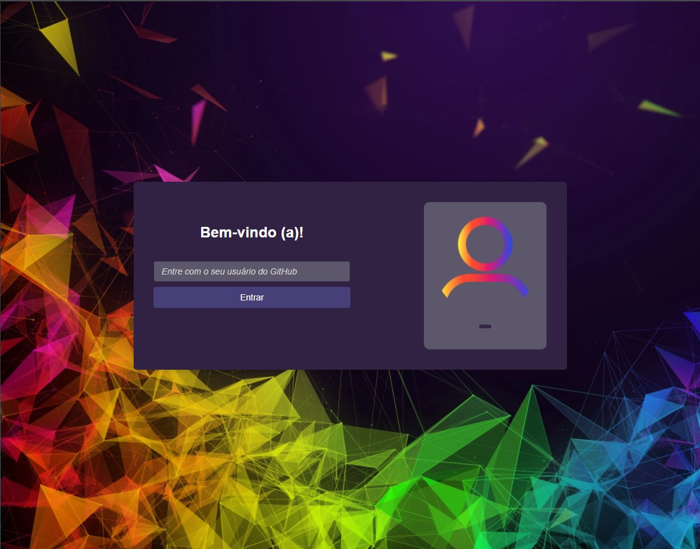
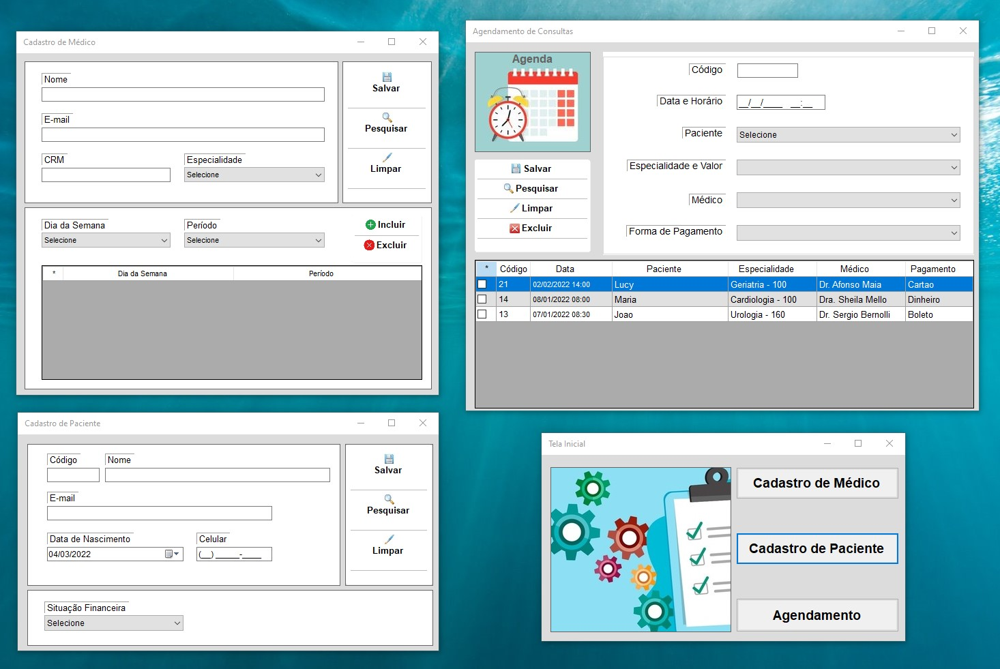
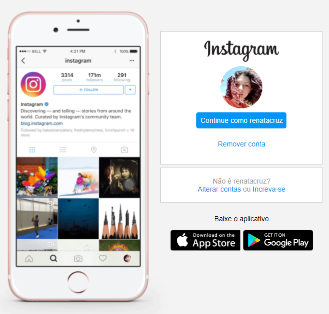

Renata Cruz
Ribeirão Preto/SPFULL STACK DEVELOPER


Portfólio
Em desenvolvimento
-

Chat
Projeto realizado durante a imersão react da Alura em janeiro de 2022. Trata-se de um chat, inspirado no Discord em que o usuário realiza login usando o seu nome de usuário do github para acessar a sala de chat. O projeto possui integração com o supabase, que fornece a infraestrutura de back-end para armazenar as mensagens enviadas e a api do github.
-

Agenda Clínica
Esse projeto foi desenvolvido em C# + Oracle SQL com a finalidade de estudo. É um sistema de agendamento de consultas para uma clínica. Utilizado o Visual Studio e desenvolvido utilizando estrutura em camadas (Formulário, Serviço, Repositório). Todas as telas foram feitas com Windows Forms.
-

Landing Page
É uma página inicial que fornece detalhes do aplicativo ao usuário. Tem a seção de título, botões de download com ícone Apple e Google Play para baixar o aplicativo. Tem a seção de recursos e depoimentos dos clientes. Possui diferentes planos de assinatura, chamada de ação onde faz seus usuários baixarem o aplicativo. E no final tem um pequeno rodapé com as redes socias.
© 2022 Renata Cruz